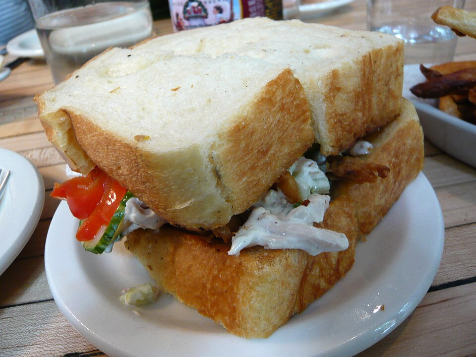

Salgados · Petiscos
Salpicão de galinha

Ingredientes
- 1 peito de galinha, cozido e desfiado
- Parte branca de 1 salsão, picada fina
- 1 cebola grande em rodelas finas
- Parte branca de 1 erva-doce, picada
- 1 xícara (chá) de azeitonas verdes e pretas, picadas
- ½ kg de batatas cozidas em cubos
- Sal, pimenta-do-reino e suco de limão a gosto
- 3 colheres (sopa) de vinagre
- 1 lata de creme de leite
- 1 colher (sopa) de mostarda
Modo de preparo
- Misture o peito desfiado com salsão, cebola, erva-doce, azeitonas e batatas. Tempere com sal, pimenta e limão; deixe tomar gosto.
- À parte, junte o vinagre ao creme de leite; tempere com sal, pimenta e mostarda.
- Incorpore ¾ do molho aos picados, arrume no prato e cubra com o restante do molho.